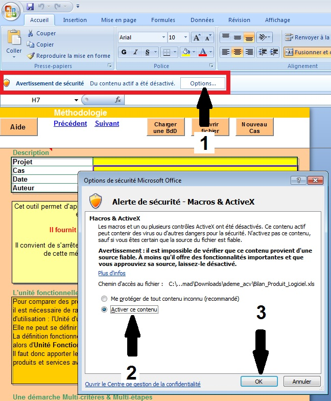
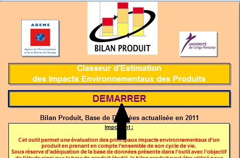
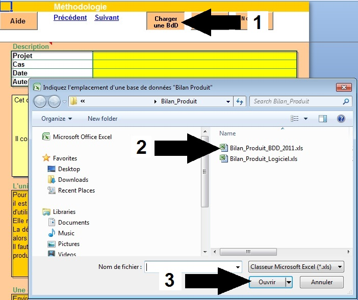

Développement durable

Le logiciel Bilan Produit ® a été conçu par l’ADEME (Agence de l'Environnement et de la Maîtrise de l'Energie) pour permettre aux entreprises d’évaluer facilement, rapidement et de manière autonome l’impact écologique de leurs produits.
Un outil d’évaluation multicritères basé sur une méthode reconnue
Le logiciel Bilan Produit ® est basé sur la méthodologie de l’Analyse de Cycle de Vie (ACV). Il s’agit d’une méthode normalisée de quantification des impacts environnementaux des produits, basée sur 3 principes:
- Une approche fonctionnelle: le logiciel Bilan Produit ® évalue les impacts environnementaux induits par la fonction rendue par le produit. Il permet ainsi par exemple de comparer la qualité écologique de deux produits analogues mais avec des durées de vie différentes (un rasoir classique contre un rasoir jetable), ou encore d’un bien et d’un service rendant la même fonction.
- Une approche cycle de vie: toutes les étapes de la vie du produit sont prises en compte, de l’extraction des matières premières à l’élimination en fin de vie.
- Une approche multicritère: les consommations de matières et d’énergie, les rejets et émissions dans l'air, l'eau et les sols, et la production de déchets sont quantifiés à chaque étape du cycle de vie et exprimés selon 8 indicateurs.
Enjeux environnementaux Indicateurs Epuisement des ressources non renouvelables (NR) Consommation d'énergie NR Epuisement des ressources NR Réchauffement climatique Effet de serre Pollution de l'air Acidification Pollution photochimique Pollution de l'eau Eutrophisation Toxicité Ecotoxicité aquatique Toxicité humaine
Un outil d’éco-conception
Le logiciel Bilan Produit ® permet à l’entreprise d’identifier quels sous-ensembles, matériaux, process ou étapes du cycle de vie sont responsables des principaux impacts engendrés par son produit, et ainsi d’identifier sur quel élément agir en priorité pour facilement améliorer son produit. Une fois les premières pistes d’amélioration identifiées, l’entreprise peut les tester grâce à la fonction « Comparer » de l’outil.
Installation de Bilan Produit ®
- Téléchargez le logiciel et enregistrez le sur votre clé USB ou, à défaut, sur le "Bureau": Bilan Produit ® BDD 2011.
- Décompressez le dossier archivé: clic droit sur le fichier ".zip", et sélectionnez "Extraire tout".
- Lancez le tableur en faisant un double clic sur le fichier: Bilan_Produit_Logiciel.xls.
- Réactivez, au besoin, les "Macros & ActiveX" (cette procédure dépend de la version, de Ms-office, utilisée):

- Lancez le début de l'étude en cliquant sur le bouton "DEMARRER":

- Chargez la base de données: Bilan_Produit_BDD_2011.xls
